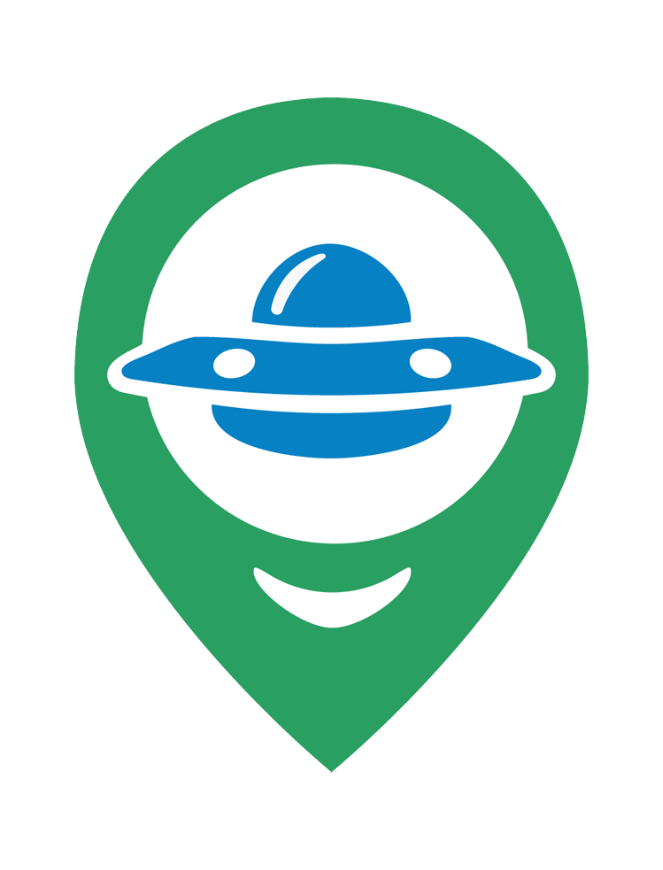

Načítám data mapy, čekejte několik sekund... / Loading map data, please wait a few seconds...
Načítám data mapy, čekejte několik sekund... / Loading map data, please wait a few seconds...
Načítám data mapy, čekejte několik sekund... / Loading map data, please wait a few seconds...
Načítám data mapy, čekejte několik sekund... / Loading map data, please wait a few seconds...

Interaktivní mapa UAPAutorem návrhu mapy a grafického loga je Jaroslav Svoboda z České republiky, tato mapa vizualizuje historická data pozorování neznámých atmosférických fenoménů (UAP) / neidentifikovaných létajících objektů (UFO) za 20. století a za první čtvrtinu 21. století. K zobrazení jsou také další dostupné historické údaje zapsané od 15. století až po rok 2022, najdete je v panelu Badatelna. Formáty datumů všech záznamů jsou MĚSÍC DEN ROK.
Použité AI nástroje: Při budování a úpravách tohoto kódu byly využity AI nástroje Microsoft Copilot a Google Gemini.
Poděkování za data:
Zadejte rok a klikněte na "Načíst rok".